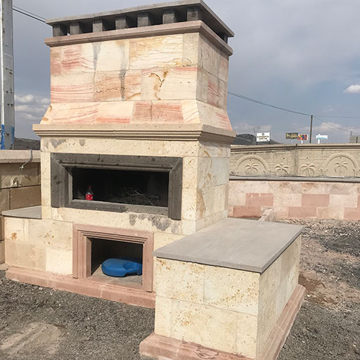

Kapadokya ve yöresinde üretilen tüf taşları volkanik tüflerdir.
Aynı zamanda yapısı bakımından doğal izolasyon malzemeleridir. Gözenekli bir yapısı olmasına rağmen gözenekleri bir biriyle
bağlantısı olmadığından dayanıklıdır. Tüf taşları ocaktan ilk çıkarıldığında yumuşak ve işlemesi kolay bir taş görünümündedir
ama zamanla güneş ve havayla temasıyla çok sert bir yapıya bürünür.
Kapadokya ve yöresinde üretilen tüf taşlarını ilk önce uygulama şekilleri ve kullanım alanları olarak sınıflandırmamız gerekir.
Taşlarımız tamamı cephe kaplaması olarak kullanılmaktadır, zemin kaplaması olarak da renklerimiz zemin kaplaması olarak en az 3 cm
kalınlıkta olmak üzere değişken ebatlarda uygulanması mümkündür.
Cephe kaplamalarında kullanılan yöntemleri şöyle sıralayabiliriz, ilk önce yığma sistem olarak yapılan taşlar için yığma sistemi düşünebiliriz.
Yığma taşların ebatları 10 x 30 x 65, 15 x 30 x 65 olarak kullanılır.
Yapıştırma olarak tüm renk taşlarımız yapıştırılacak zeminin düzgünlüğüne göre fayans yapıştırıcı malzemeler veya harçlı olarak uygulanır.
bu taşlar standart olarak 2 x30x s.b, 3 x 30 x s.b, 4 x 30 x s.b, 5 x 30 s.b olarak ve projeye göre değişken ebatlarda uygulamamız mümkündür.
Bunların dışında bir diğer uygulama metodumuzda mekanik uygulamadır, bu sistem özellikle çok katlı binalarda tercih edilen bir sistemdir.
Uygulama şekli cepheleye paslanmaz çelik profiller dübeller vasıtasıyla monte edilir bu profillerin üzerine ankraj malzemeleri monte edilir
ve taşlar delinerek bu ankraj malzemelerine pimler yardımıyla tutturulur yani bütün yük çelik aksamdadır .
Bu sistem yapıştırmaya oranla yaklaşık 2 kat daha maliyetlidir. Bu uygulamada renk taşlarımız 3 x 30 x s.b, 4 x 30 x s.b, 5 x 30 s.b olarak ve
projeye göre değişken ebatlarda kullanılabilmektedir.

KAYSERİ TAŞI HAKKINDA
Yollarda, kaldırımlarda, duvarlarda ve birçok alanda kullanılan dekoratif taşlar her zaman dikkatimizi çekmiştir.
Yapı sektörünün vazgeçilmezleri arasında yer alan taşlardan biri olan bazalt taşı, ülkemizde yaygın olarak kullanılan
dekoratif taşlar arasında mermerden sonra başı çekiyor. Anadolu medeniyetlerinde yaygın olarak kullanılan ve günümüze
kadar birçok alanda kullanımını gördüğümüz Bazalt taşı, volkanik hareketlerle oluşmuş kor kayaç taşlarıdır. En fazla
İç Anadolu Bölgesi?nde üretiliyor. kayseri de başı çeken Bazalta, bu sebeple ?Kayseri taşı? diyenler de var.
Üretildiği bölgenin doğal özellikleri ve madenin yaşına göre renkleri de farklılık gösteren Bazalt taşları
genel olarak gri ve kahve tonları üretilebiliyor. Bazalt taşları daha çok kaldırımlar başta olmak üzere merdivenler sert
zemin döşemeleri dış duvar kaplamalarına kadar birçok alanda kullanılıyor ve kullanım alanları giderek yaygınlaşıyor.
Bazalt doğal taşların bordür uygulamalarına da sık rastlanıyor. Bazalt taşlarından kabartmalar, desenler ve dekoratif uygulamalar
yapılabildiği için kullanım alanları da giderek artıyor. Bazen bir çeşmede desenli bir kemer yapılabilirken, tarihi bir binada
Osmanlı tuğrası da işlenebiliyor. Yapı çeşitliliğine göre Bazalt taşını işleyenlerin hayal dünyasının kapasitesiyle dekoratif özelliklerini
artırmak Bazalt sert islak ve kuru zeminlerde son dönemlerde tarihi ve sıcak yapısı münasebeti ile bir çok alanda görüle bilmektedir
BAYBURT TAŞI HAKKINDA
Bayburt Taşı, sertliğinin az olması ve ince taneli olması dolayısıyla kolay işlenmesi nedeniyle ev, duvar, köprü ve mezarların yapımında,
cami ve evlerin dış cephe kaplamalarında, dekoratif amaçlı ürünlerde ve çeşitli hediyelik eşyalarda kullanılır. Yöredeki başlıca sahalar Toptepe,
Sırataşlar, Gevenli, Konakdağ ve Gümüşdamla taş ocaklarıdır.
Bayburt Taşı; sarı-beyaz renkli, bazen beyaz zeminde yeşil benekli, bazen de sarı ve yeşil dalgalanmalı renk karışımında
gözlemlenen, yapı taşı olarak kullanılan malzemesi tüfit olan, sertliği az (mohs-skalasına göre 2-3) ve ince taneli olması
dolayısıyla kolay yontulabilen, yumuşak, özellikle kaplama taşı olarak kullanılan doğal taştır. Bayburt Taşının sarı ve beyaz
renkte olanları yapılarda kaplama taşı olarak kullanılır. Kalınlıkları 10 cm, uzunlukları 30-40 cm, genişliği 20 cm olanlar ise
yapı taşı olarak kullanılır. Suyu emme özelliği fazla olduğundan ani ısı değişimine sahip ortamlarda tercih edilmez,
beyaz çiçeklenme ve kavlama yapar. Bayburt Taşı çıkarıldıktan sonra güneşi görmeden yapılacak ince işlemecilik taşa ayrı bir güzellik katmaktadır.
Zira ürünün esas kullanım alanı ince işlemeciliğin yapıldığı iç mekan dekoratif ortamlardır.